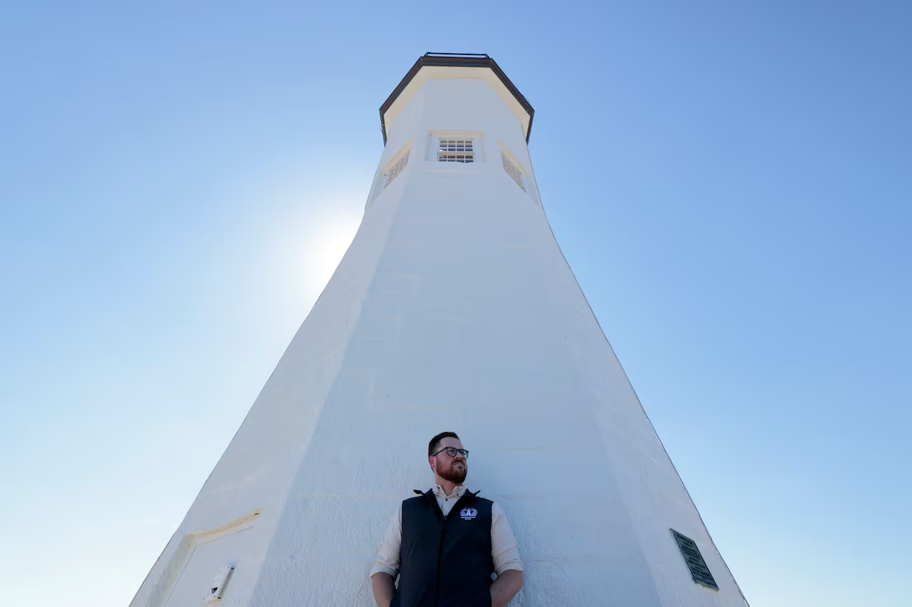
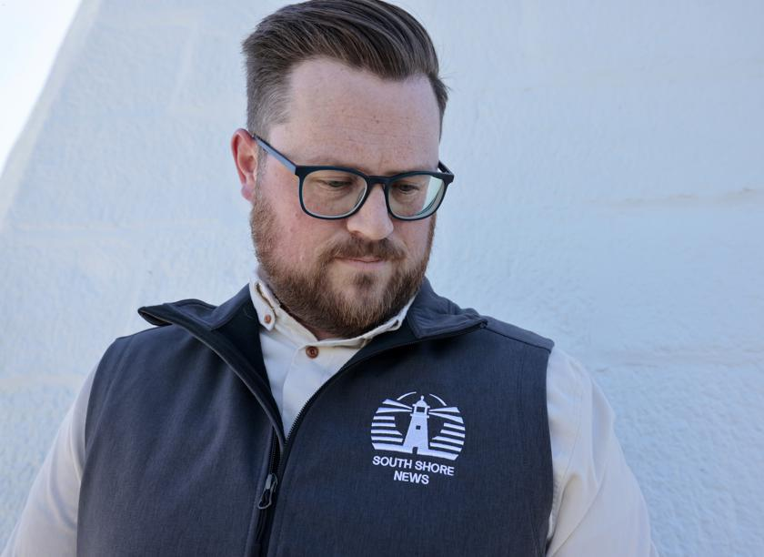
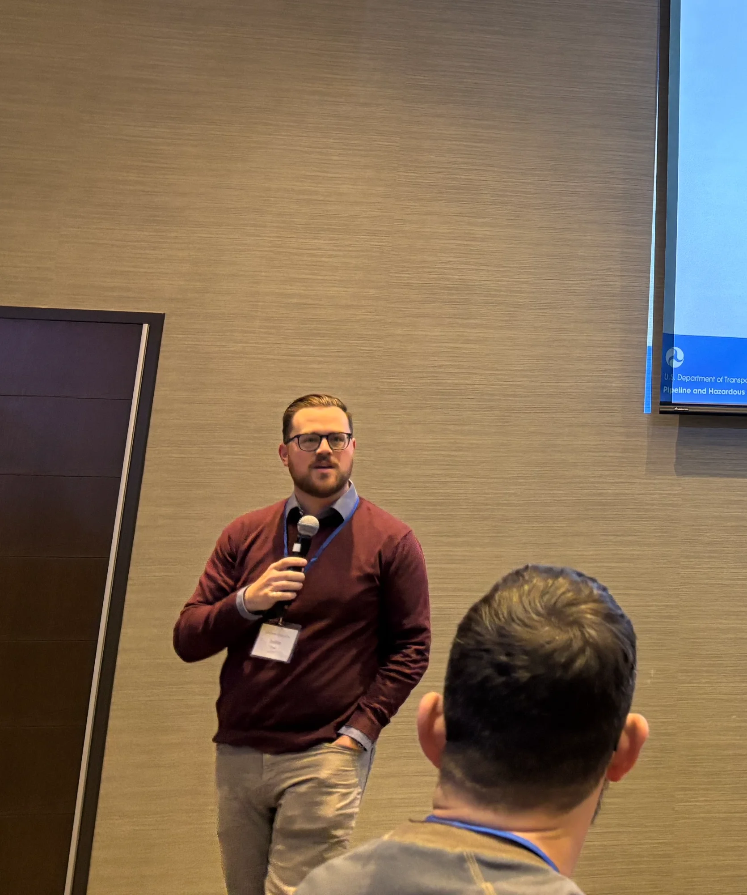
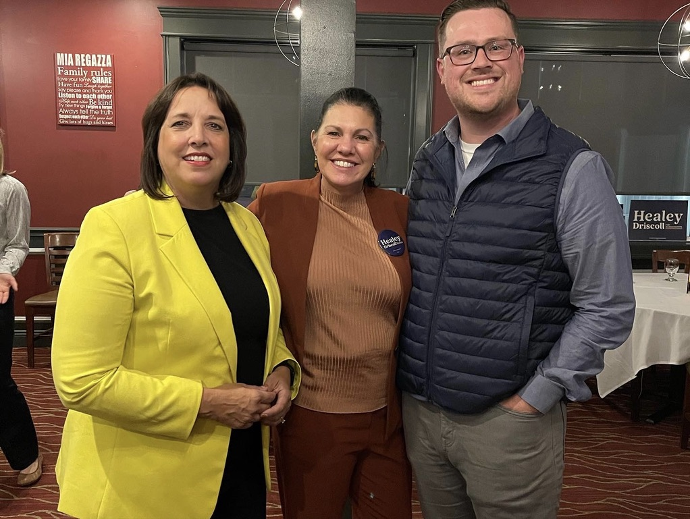

Whitman, Massachusetts
Energy regulator. Local news founder. Elected official. Working where infrastructure, technology, and civic life meet.

Founded 2024
AI-powered coverage of town government across 19 communities that traditional media left behind.

Energy Regulation
Assistant Director of Pipeline Safety at the Massachusetts DPU. Seven years on pipeline infrastructure, LNG facilities, and first-in-nation safety guidelines for networked geothermal.
Elected since 2019
Three terms. Community Preservation Act adoption, school agreement reform, and municipal energy aggregation.
The campaign →
In the Media